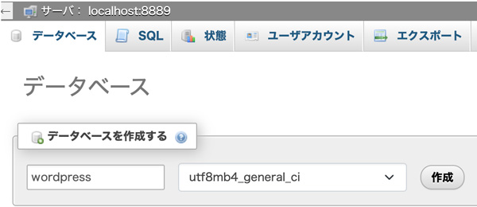
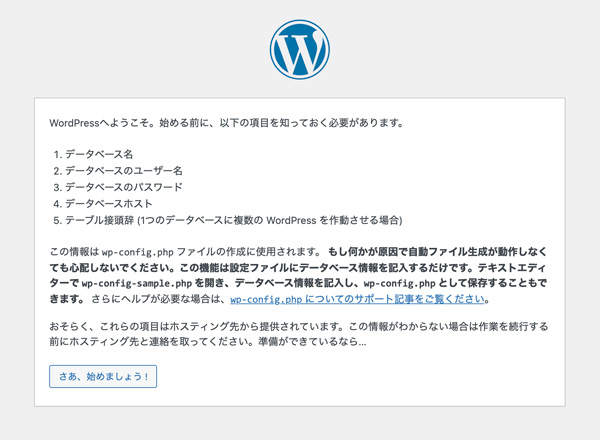
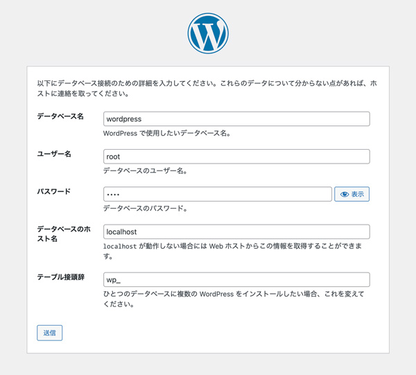
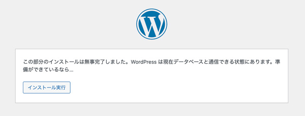
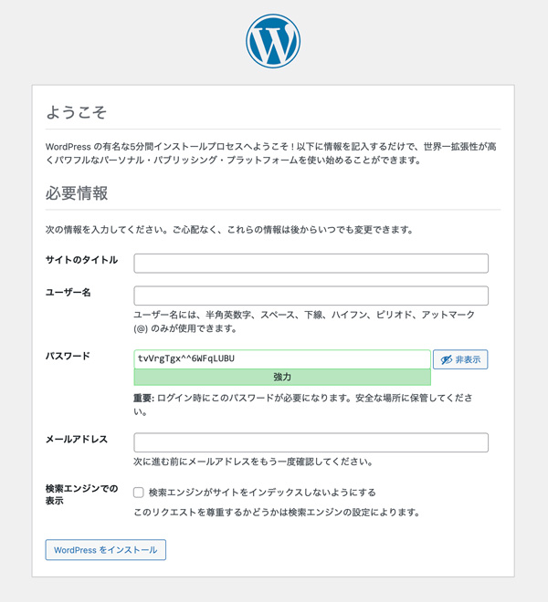
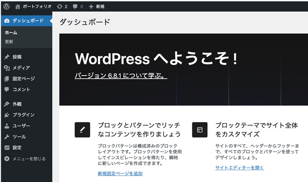

MAMPにWordPressを設置
- ローカル環境（仮想サーバー）にWordPressを実装
phpMyadminでデータベースを作成
- 「MAMP」→「WebStart」でダッシュボーを表示
- 「Tools」→「phpMyAdmin」を選択して「データベース」の管理画面を表示
- 「wordpress」というデータベース作成（Windowsの場合は、「utf8_general_ci」を選択）

WordPressインストール
- ブラウザアドレスに「http://localhost/wordpress/」と入力

- 必要な値を入力


- インストール実行

